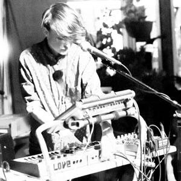

Samples and Songs:
Ojai FAce Challenges FAce Challenges Family of Light Virginia Third Dimensional Wild Horses
Download Resume-->
- SELECTED EXHIBITIONS & PERFORMANCES
- PROJECTS
- BANDS
- PRESS & PUBLISHED WORKS
- EDUCATION & CERTIFICATION

- Email kerbyferris[at]gmail.com
- Soundcloud
- Spotify
- GitHub